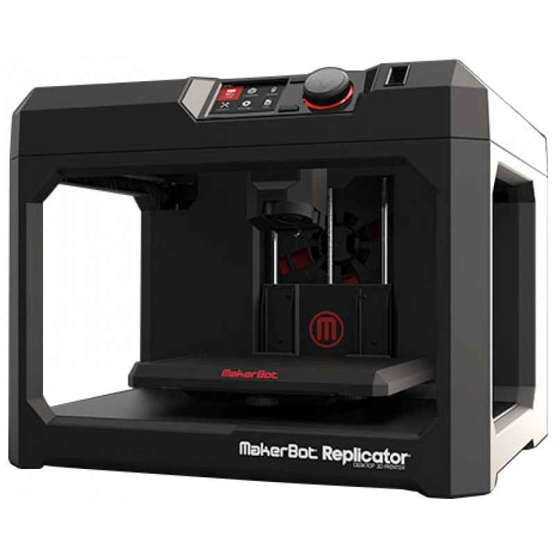

The Makerbot Replicator 5th Gen has a 10 in x 8 in x 6 in build plate, which is the dimension limitation.
Also, the Makerbot can connect to USB and WiFi for connectivity. The minimum depth per layer is 100 microns (0.004 inches),
and usable materials include ABS and PLA thermplastics. Being a 3D printer, the Makerbot uses additive manufacturing to make objects,
meaning it is more detailed and can create hollow areas in an object. Compared to subtractive manufacturing, additive
also uses less than a subtracyive printer, but subtractive is cheaper and has a wider variety of usable materials.
Finally, additive printers cannot get as smooth of an edge as subtractive printers (CNC milling), as they have to have
a minimum layer depth. 
TEXT